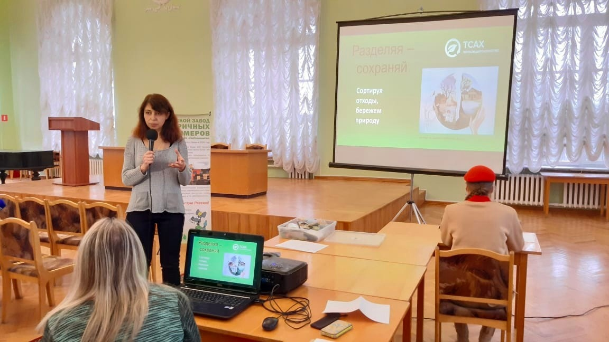

 15 ноября в Твери прошел ежегодный Всероссийский экологический диктант. Экодиктант направлен на повышает уровня экологической грамотности населения, развитие экологического просвещения и экологического волонтерства, а также на формирование экологической культуры. Перед написанием диктанта с приветственным словом выступили представители ТСАХ и Тверского Завода Вторичных полимеров. И это не случайно, присутствующие смогли пополнить свои знания о состоянии РСО в нашем городе, как правильно сортировать отходы и куда дальше движется собранный мусор. Об этом очень понятно и доступно рассказала и показала Татьяна Иванченко – пресс-секретарь ООО «Тверьспецавтохозяйство». А Наталья Попова, руководитель пресс-группы ТЗВП познакомила участников Экодиктанта с процессами переработки пластика на ТЗВП, почему так важно пластик сдавать на переработку и что можно сделать из вторичного сырья.